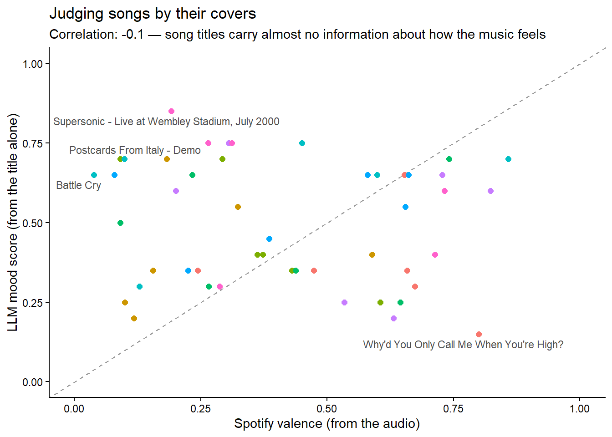

- 1
-
The
chat_*()family picks your provider:chat_google_gemini(),chat_anthropic(),chat_openai(),chat_ollama()… swap this one line and everything else in this session works unchanged. - 2
- The system prompt sets behaviour for the whole conversation –tone, format, role, constraints. It is the single highest-leverage sentence you will write.
- 3
-
$chat()sends a message and returns the answer as a plain string. The$syntax is new: chat objects are R6 objects, little machines that carry their own state –the conversation history.
Talking to machines 🤖
Learn how to use Large Language Models programmatically with ellmer
LLM
ellmer
AI
structured data
API
LLMs are not just chatbots: they are functions you can call from R. Learn to chat, design prompts, extract structured data from text, and give models tools –all with ellmer.
“The question of whether a computer can think is no more interesting than the question of whether a submarine can swim.”
–Edsger W. Dijkstra
Level: Intermediate · Time: ~45 min · Prerequisites: Everything in its right place · Tools: ellmer
You will learn to
- Call an LLM from R as a function, not a chat window.
- Design a prompt and hold a multi-turn conversation with ellmer.
- Force a model’s answer into a typed structure with structured extraction.
- Give a model tools it can decide to call on its own.
- Recognise when a model is confidently answering a question its input can’t actually answer.
PART I: An LLM is a function
You have used a chatbot. This session is about something more useful: calling a Large Language Model from code, where its answers become objects you can filter, join, plot and disagree with –like any other data.
The package for this in R is ellmer, from the tidyverse team. It speaks to every major provider –Google, Anthropic, OpenAI, Mistral, local models via Ollama– with the same functions, so nothing you learn today is tied to one company.
TipGet a key, keep it secret
This workshop’s default is Google Gemini, because its free tier requires no credit card: create a key in two minutes. Then store it where R finds it and no one else does –your .Renviron file, never your script:
usethis::edit_r_environ() # opens .Renviron; add the line below and restart R
# GEMINI_API_KEY=your-key-hereRemember session 2: this workshop once leaked a pair of Spotify credentials by writing them in a script. Learn from our sins.
Every conversation starts by creating a chat object, and the system prompt is where you tell the model who it should be:
#> An LLM is a neural network trained on vast amounts of text to predict the
#> next word in a sequence, which when repeated millions of times produces
#> human-like language output.The system prompt is not decoration. Watch it completely change the machine:
poet <- ellmer::chat_google_gemini(
system_prompt = "You answer strictly in haiku. Never break form."
)
poet$chat("Why should economists learn R?")#> Data speaks true here,
#> R unlocks hidden patterns—
#> Economics grows.
ImportantSame question, different answers
Model outputs on this page were captured once (with Claude Haiku) and pasted in –run the code and your answers will differ, even between two identical runs. LLMs are stochastic: they sample from a probability distribution over words. Treat every output the way you would treat a colleague’s first draft: plausible, useful, and unverified.
PART II: From prose to tibbles
Chatting is a party trick. The feature that changes your work as an analyst is structured extraction: you describe the shape of the data you want –a type_object(), like a contract– and ellmer forces the model’s answer into exactly that shape. Text goes in, a tibble comes out.
Remember the Kyoto cherry blossoms from session 2? Here is a news-style paragraph about them, the kind of unstructured text the world produces by the ton:
library(ellmer)
passage <- "The 2024 cherry blossom season in Kyoto reached full bloom on April 4th,
five days earlier than the 20th-century average. Tokyo peaked on April 6th, while
Sapporo, far to the north, waited until May 1st. Experts attribute the shift to a
March that averaged 2.1 degrees Celsius above the historical norm."
4bloom_type <- type_array(
type_object(
5 city = type_string("Name of the city"),
full_bloom = type_string("Date of full bloom, ISO format, assume 2024"),
note = type_string("Any qualifier the text attaches to this city, or empty")
)
)
extractor <- ellmer::chat_google_gemini()
6extractor$chat_structured(
paste("Extract every city mentioned with its full-bloom date:", passage),
type = bloom_type
)- 4
-
type_array()oftype_object()s means “I want a table with these columns” –one object per row. - 5
-
Each field gets a description, which is really a mini-prompt: the model reads it to decide what goes in the column. Notice how
"ISO format, assume 2024"quietly handles the date parsing that would take you three lines oflubridate. - 6
-
$chat_structured()is$chat()with a contract attached. The answer is not prose –it is data, ready forggplot.
#> # A tibble: 3 × 3
#> city full_bloom note
#> <chr> <chr> <chr>
#> 1 Kyoto 2024-04-04 "five days earlier than the 20th-century average"
#> 2 Tokyo 2024-04-06 ""
#> 3 Sapporo 2024-05-01 "far to the north"Think about what just happened: the PDF scraping, regex wrangling and date parsing of session 3 collapsed into a schema and one function call. Not always this cleanly –but this is now a tool in your box, and it works on interview transcripts, policy documents, survey open-ends, 19th-century books…
The machine judges our music
Let’s do extraction at scale, and be properly skeptical about it. From session 2’s Spotify archive we sampled 48 songs. We asked the model to rate –judging only by the title– how positive each song sounds, using parallel_chat_structured() to score them all concurrently:
library(tidyverse)
library(ellmer)
7songs <- readr::read_csv(paste0(getwd(), "/llm_mood_scores.csv")) |>
dplyr::select(-llm_mood)
mood_type <- type_object(
mood = type_number("How positive/happy this song title sounds, 0 = bleak, 1 = euphoric")
)
8prompts <- ellmer::interpolate(
"Judging ONLY by its title, how positive does the song '{{songs$track_name}}' by {{songs$artist}} sound?"
)
scorer <- ellmer::chat_google_gemini()
9moods <- ellmer::parallel_chat_structured(scorer, as.list(prompts), type = mood_type)
songs$llm_mood <- moods$mood- 7
- The song sample ships with this session –and so do the scores we got, so the next chunk runs without any API key.
- 8
-
interpolate()builds one prompt per row from a template,glue-style. Templates keep your prompts out ofpaste()spaghetti. - 9
-
parallel_chat_structured()sends all 48 prompts concurrently and returns one tidy data frame. Scoring cost about half a cent.
Now the real question: does the machine’s guess agree with Spotify’s valence, which was computed from the audio itself?
library(tidyverse)
library(ggrepel)
mood_scores <- readr::read_csv(paste0(getwd(), "/llm_mood_scores.csv"))
mood_scores |>
ggplot(aes(x = valence, y = llm_mood)) +
10 geom_abline(linetype = "dashed", color = "grey60") +
geom_point(aes(color = artist), size = 2, show.legend = FALSE) +
11 ggrepel::geom_text_repel(
data = \(d) dplyr::slice_max(d, abs(valence - llm_mood), n = 4),
aes(label = track_name), size = 3, color = "grey30"
) +
scale_x_continuous(limits = c(0, 1)) +
scale_y_continuous(limits = c(0, 1)) +
labs(
title = "Judging songs by their covers",
subtitle = paste0("Correlation: ", round(cor(mood_scores$valence, mood_scores$llm_mood), 2),
" — song titles carry almost no information about how the music feels"),
x = "Spotify valence (from the audio)",
y = "LLM mood score (from the title alone)"
) +
theme_classic()- 10
- The dashed line is perfect agreement. Look how far we are from it.
- 11
-
We label the biggest disagreements –
slice_max()inside a layer’sdataargument is a neat trick for annotating outliers only.

The correlation is essentially zero. The model did exactly what we asked –it judged titles, competently– and what we asked was not informative. Hold on to this lesson: an articulate answer is not evidence that the question was answerable. The most dangerous LLM failure is not a wrong answer; it is a confident answer to a question the input cannot support.
PART III: Give the machine your tools
One more superpower. An LLM knows nothing about right now –its training data ended months ago. But you can hand it your R functions and let it decide when to call them. Here we wrap the Open-Meteo API from session 2 into a function, register it, and ask a question the model cannot answer alone:
library(ellmer)
12weather_now <- function(latitude, longitude) {
httr2::request("https://api.open-meteo.com/v1/forecast") |>
httr2::req_url_query(latitude = latitude, longitude = longitude,
current = "temperature_2m") |>
httr2::req_perform() |>
httr2::resp_body_json() |>
purrr::pluck("current", "temperature_2m")
}
assistant <- ellmer::chat_google_gemini()
13assistant$register_tool(tool(
weather_now,
"Gets the current temperature in Celsius at a location",
arguments = list(
latitude = type_number("Latitude in decimal degrees"),
longitude = type_number("Longitude in decimal degrees")
)
))
14assistant$chat("Is it warmer right now in Kyoto or in Paris? Answer in one sentence with the temperatures.")- 12
- An ordinary R function –nothing special about it. Yours could query your database, run a model, read a file.
- 13
-
register_tool()describes the function to the model: what it does, what arguments it takes. The descriptions are prompts –write them like documentation. - 14
-
Watch the loop: the model reads the question, decides it needs data, calls
weather_now()twice (once per city, working out the coordinates itself), reads the numbers, and composes the answer. That loop –model, tools, model again– is what people mean by the word agent.
#> Kyoto is warmer right now at 23.3°C compared to Paris at 16.8°C.
TipWhat this costs, roughly
Providers charge per token (~¾ of a word). Everything executed while writing this session –every example, including scoring 48 songs– cost under two US cents on a small model. The free Gemini tier covers the whole session comfortably. Big models for hard problems, small models for bulk work: choosing the right size is a real skill.
🏗 Practice 1: Talk back
The browser can’t hold an API key, but it can hold data an LLM already produced – the session’s own 48 mood scores. Interrogate them here; talk to the model itself in the Advanced tier.
Key takeaways
- ellmer turns an LLM into a callable R function, with the same interface across providers.
- Structured extraction (
type_object()) forces free text into a shape you can actually use downstream. - Tool calling lets the model decide when it needs outside information, not just answer from what it already has.
- A model will answer fluently even when its input can’t support the answer – fluency is not evidence of correctness.
- Small models are usually enough, and cheap enough that cost isn’t the reason to avoid experimenting.
Citation
BibTeX citation:
@online{amaya2026,
author = {Amaya, Nelson},
title = {Talking to Machines 🤖},
date = {2026-07-04},
url = {https://nelsonamayad.github.io/R4DEV/sessions_ai/01-llm/01-llm},
langid = {en}
}
For attribution, please cite this work as:
Amaya, Nelson. 2026. “Talking to Machines 🤖.” July 4. https://nelsonamayad.github.io/R4DEV/sessions_ai/01-llm/01-llm.